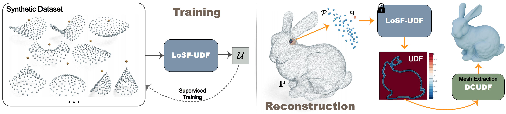
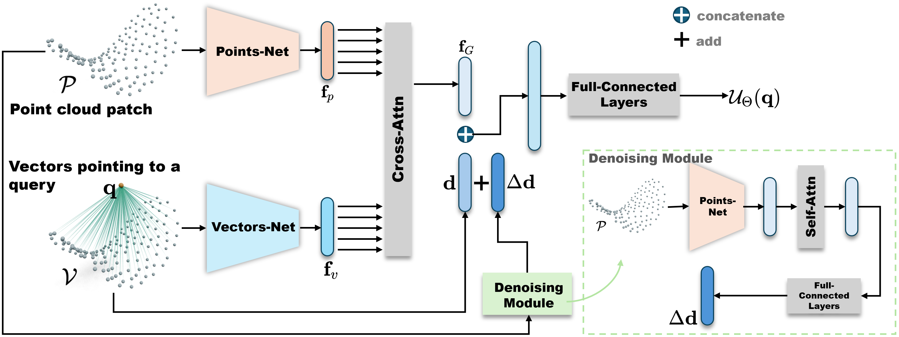

A Lightweight UDF Learning Framework for 3D Reconstruction Based on Local Shape Functions
Jinagbei Hu1,2*, Yanggeng Li2*, Fei Hou3, Junhui Hou4, Zhebin Zhang5, Shengfa Wang1, Na Lei1, Ying He2✉
1 Dalian University of Tehcnology 2 Nanyang Technological University 3 Chinese Academy of Sciences 4 City University of Hong Kong 5 InnoPeak Technology 2 S-Lab, Nanyang Technological University * Equal contribution ✉ Corresponding author
Abstract
Unsigned distance fields (UDFs) provide a versatile framework for representing a diverse array of 3D shapes, encompassing both watertight and non-watertight geometries. Traditional UDF learning methods typically require extensive training on large 3D shape datasets, which is costly and necessitates re-training for new datasets. This paper presents a novel neural framework, LoSF-UDF, for reconstructing surfaces from 3D point clouds by leveraging local shape functions to learn UDFs. We observe that 3D shapes manifest simple patterns in localized regions, prompting us to develop a training dataset of point cloud patches characterized by mathematical functions that represent a continuum from smooth surfaces to sharp edges and corners. Our approach learns features within a specific radius around each query point and utilizes an attention mechanism to focus on the crucial features for UDF estimation. Despite being highly lightweight, with only 653 KB of trainable parameters and a modest-sized training dataset with 0.5 GB storage, our method enables efficient and robust surface reconstruction from point clouds without requiring for shape-specific training. Furthermore, our method exhibits enhanced resilience to noise and outliers in point clouds compared to existing methods. We conduct comprehensive experiments and comparisons across various datasets, including synthetic and real-scanned point clouds, to validate our method's efficacy. Notably, our lightweight framework offers rapid and reliable initialization for other unsupervised iterative approaches, improving both the efficiency and accuracy of their reconstructions.
Video
Method

Motivation: Distinct from SDFs, there is no need for UDFs to determine the sign to distinguish between the inside and outside of a shape. Consequently, the UDF values are solely related to the local geometric characteristics of 3D shapes. Furthermore, within a certain radius for a query point, local geometry can be approximated by general mathematical functions. Stemming from these insights, we propose a novel UDF learning framework that focuses on local geometries. We employ local shape functions to construct a series of point cloud patches as our training dataset, which includes common smooth and sharp geometric features. Given a point cloud to reconstruct, we employ the optimized model to output the corresponding distance values based on the local patch within radius for each query point.
Network Architecture

Results
Diverse shapes
We evaluate our method on various datasets, such as Shapenet, DeepFashion, and commonly used computer graphics models, including watertight and non-watertight surfaces.
With noise/outliers
Our method exhibits enhanced resilience to noise and outliers in point clouds compared to existing methods.
CAP-UDF
LevelSetUDF
GeoUDF
DUDF
Ours
Real-scanned & large scene
Our method is capable of handling real-scanned and large scene point clouds.
Efficiency
Our framework is highly lightweight with only 653 KB of trainable parameters and a modest-sized training dataset with 0.5 GB storage. We compared the time efficiency in the following table. We measured the average runtime in minutes. "#Params" denotes the number of network parameters, while "Size" refers to the storage space occupied by these parameters.
| Method | SRB | DeepFashion3D | ShapeNetCars | #Param | Size (KB) |
|---|---|---|---|---|---|
| CAP-UDF | 15.87 | 10.5 | 10.6 | 463100 | 1809 |
| LevelSetUDF | 15.08 | 13.65 | 14.67 | 463100 | 1809 |
| DUDF | 14.28 | 11.12 | 14.58 | 461825 | 1804 |
| GeoUDF | 0.08 | 0.07 | 0.07 | 253378 | 990 |
| Ours | 0.87 | 0.51 | 0.42 | 167127 | 653 |
Accelerating Unsupervised Methods
Unsupervised methods require time-consuming iterative reconstruction of a single point cloud. In contrast, our LoSF-UDF method is a highly lightweight framework. Once trained on a synthetic, shape-independent local patch dataset, it efficiently reconstructs plausible 3D shapes from diverse point clouds, even in the presence of noise and outliers. Although unsupervised methods are time-consuming, they can reconstruct shapes with richer details due to the combined effects of various loss functions. Therefore, we integrate our method with unsupervised approaches to provide better initialization, thereby accelerating convergence and achieving improved reconstruction results.
Citation
@article{losf-udf-2024,
title={Learning Unsigned Distance Fields from Local Shape Functions for 3D Surface Reconstruction},
author={Hu, Jiangbei and Li, Yanggeng and Hou, Fei and Hou, Junhui and Zhang, Zhebin and Wang, Shengfa and Lei, Na and He, Ying},
journal={arXiv preprint arXiv:2407.01330},
year={2024}
}